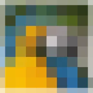

Mosaik

Teilt die Ebene in Quadrate und füllt jedes mit seiner Durchschnittsfarbe.
Einstellungen
| Einstellung | Typ | Bereich | Standard |
|---|---|---|---|
| Anzahl | Zahl | 1 bis 500 | 20 |
| Streckung | Punkt (X, Y) | 0.01 bis 10 | 1, 1 |
| Versatz | Punkt (X, Y) | -5000 px bis 5000 px | 0 px, 0 px |